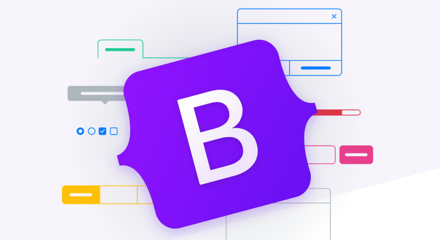

Bootstrap 5 е најновата верзија на Bootstrap (наследник на Bootstrap 4) и најпопуларен HTML, CSS и JavaScript framework.

Bootstrap вклучува HTML и CSS базирани дизајн темплети за типографија, форми, копчиња, табели, навигација и многу други, како и опциони додатоци за JavaScript.
Се користи за развивање на веб страници кои можат да се прилагодат на различни уреди (responsive).